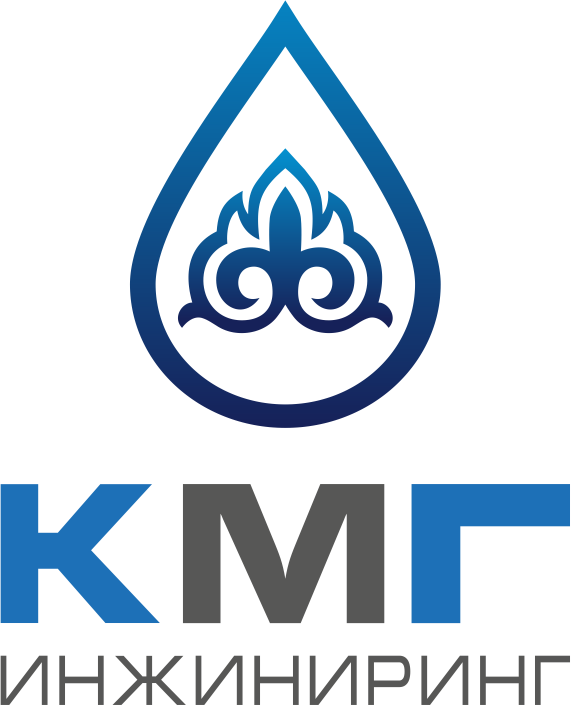
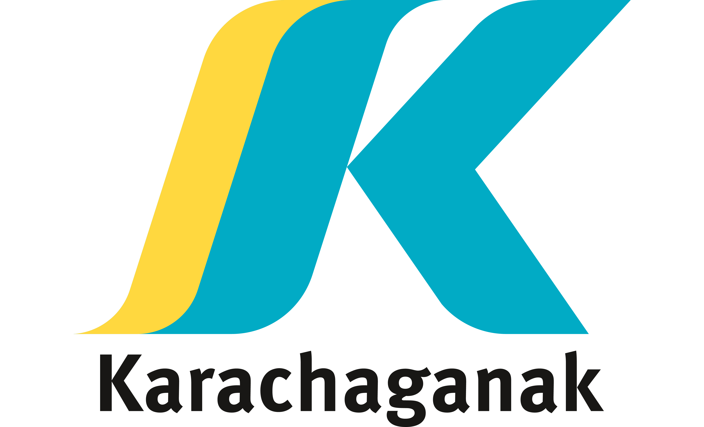
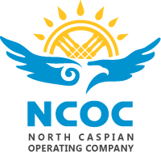

👨💻 Обо мне
Data Analyst & BI Developer с опытом реализации аналитических решений для крупных производственных компаний. Специализируюсь на разработке управленческих дашбордов, построении KPI-систем и трансформации данных в прикладные инсайты для повышения операционной эффективности и поддержки стратегических решений.
- Обеспечиваю выявление узких мест в бизнес- и производственных процессах, повышение прозрачности данных и внедрение подходов data-driven управления.
- Сочетаю аналитическую экспертизу, визуализацию и глубокое понимание бизнес-процессов для достижения измеримых результатов.
- Участвую в проектах цифровизации и внедрения data-driven подхода на крупных нефтегазовых проектах.
- Работа с нефтегазовыми digital проектами
Фокус на data-driven подход и повышение эффективности бизнеса.
⚙️ Навыки
📊 Power BI Development
🧠 Executive Dashboard Design & Performance Management
📈 KPI Framework Development & Business Metrics Alignment
📊 Data Modeling & Analytical Architecture
🧠 Operational & Production Performance Analysis
📊 Financial & Cost Efficiency Analysis
💾 Data-Driven Decision Support
📈 Process Optimization & Continuous Improvement


